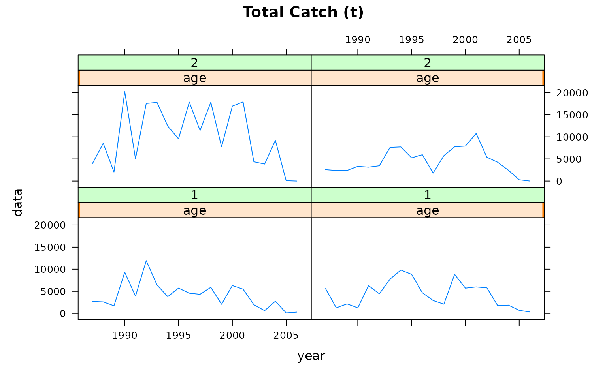
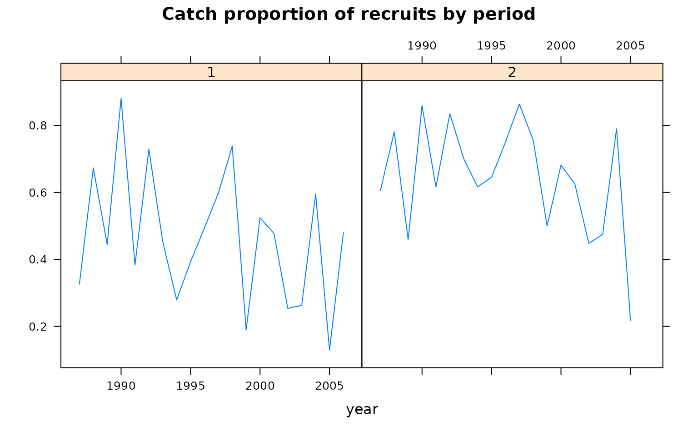
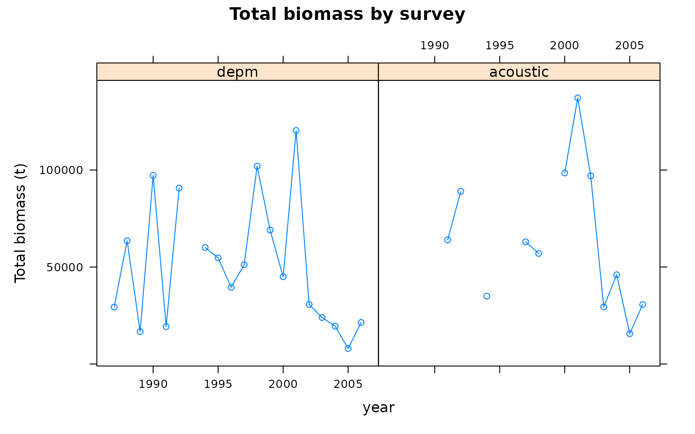
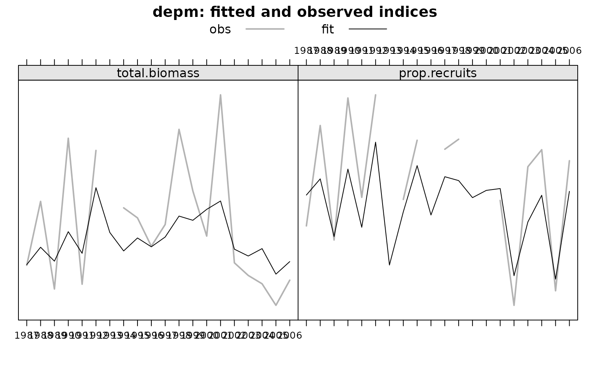
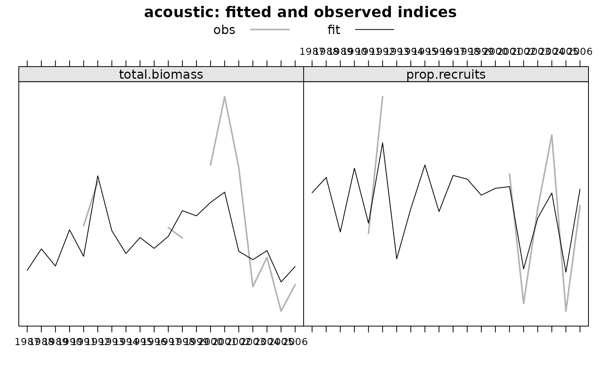
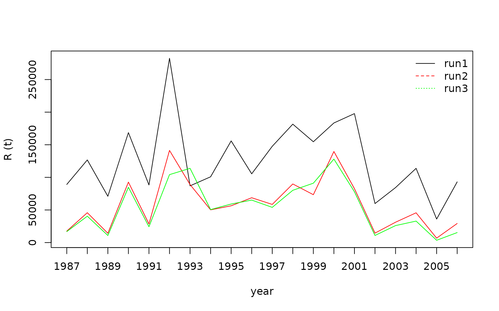
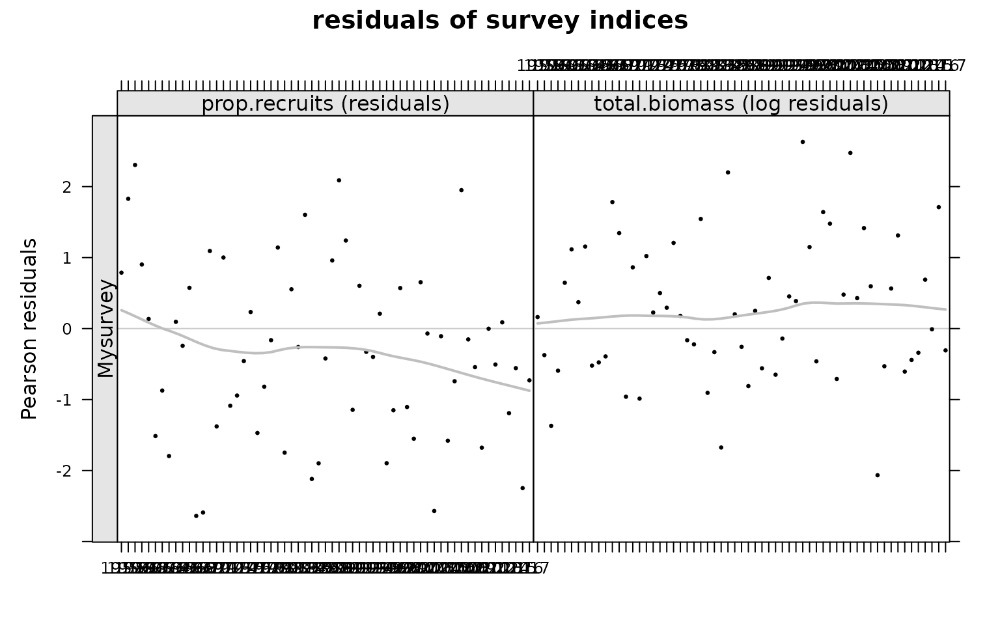
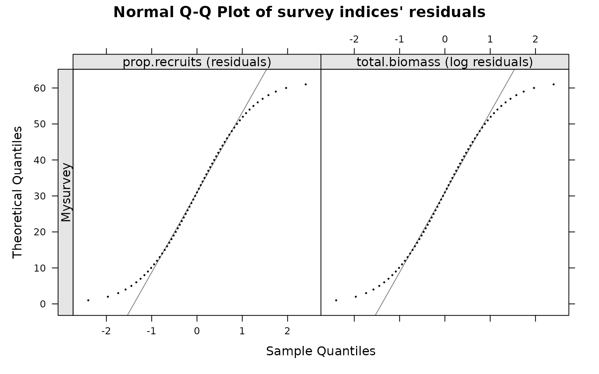

bbm_manual.Rmdbbm is an open-source R package that provides an FLR implementation of the two-stage biomass-based model for the Bay of Biscay anchovy (Ibaibarriaga et al. 2008). This model describes the stock dynamics in terms of biomass and separates the population into two stages: recruits and adults. Thus, it has lower data demands than fully age-structured models, while it is able to track the main dynamics of the population with more detail than biomass dynamic models. Besides the application to the Bay of Biscay anchovy, similar models have been applied to other case studies (Giannoulaki et al. 2014; Gras et al. 2014; Roel and Butterworth 2000; Roel, Oliveira, and Beggs 2009).
The implementation available in this package estimates the model parameters by maximum likelihood through the TMB package (Kristensen et al. 2016). Additionally, the model has been generalised for an unlimited number of indices that can occur at different times of the year. The package uses the S4 classes and methods developed by the FLR project (http://flr-project.org/R; Kell et al. 2007).
This document explains the basic use of the package bbm. The package and documentation are available at http://flr-project.org/bbm.
The package requires the packages TMB and FLCore to be installed. TMB can be installed from CRAN using the install.packages() command, whereas FLCore can be installed from the FLR project repository:
install.packages('TMB')
install.packages(c("FLCore"), repos="http://flr-project.org/R")An stable version of bbm can be installed from the FLR repository (http://flr-project.org/R) with the command:
install.packages(c("bbm"), repos="http://flr-project.org/R")A development version is available from GitHub repository (https://github.com/flr/bbm/).
library(devtools)
install_github('flr/bbm')Once installed, the package can be loaded using:
library(bbm)The package contains data and additional objects required to run the Bay of Biscay anchovy example from Ibaibarriaga et al. (2008). They can be loaded using:
data(ane)The dataset documentation can be consulted by using:
?aneThe data consist on four objects: catch.ane, indicesB.ane, indicesP.ane, control.ane and inits.ane. The first object, catch.ane, is an FLQuant with the Bay of Biscay anchovy catch in tonnes from 1987 to 2006 for the two age classes (recruits and adults) and two periods (before and after the spring surveys in mid-May). Note that the catch of the second period of the last year were not available in Ibaibarriaga et al. (2008). However, the model fitting function does not allow any missing value in the catch.ane object, and the NA’s were replaced by very small non-negative values so that the total catch was 0.001 and the age 1 proportion was 0.5.
class(catch.ane)
#> [1] "FLQuant"
#> attr(,"package")
#> [1] "FLCore"
dim(catch.ane)
#> [1] 2 20 1 2 1 1
catch.ane
#> An object of class "FLQuant"
#> , , unit = unique, season = 1, area = unique
#>
#> year
#> age 1987 1988 1989 1990 1991 1992
#> 1 2711.0000 2602.0000 1723.0000 9314.0000 3903.0000 11933.0000
#> 2 5607.0000 1262.0000 2153.0000 1259.0000 6288.0000 4433.0000
#> year
#> age 1993 1994 1995 1996 1997 1998
#> 1 6414.0000 3795.0000 5718.0000 4570.0000 4323.0000 5898.0000
#> 2 7763.0000 9807.0000 8832.0000 4676.0000 2912.0000 2090.0000
#> year
#> age 1999 2000 2001 2002 2003 2004
#> 1 2067.0000 6298.0000 5481.0000 1962.0000 625.0000 2754.0000
#> 2 8828.0000 5712.0000 5987.0000 5776.0000 1754.0000 1869.0000
#> year
#> age 2005 2006
#> 1 102.0000 287.0000
#> 2 688.0000 311.0000
#>
#> , , unit = unique, season = 2, area = unique
#>
#> year
#> age 1987 1988 1989 1990 1991 1992
#> 1 3960.0000 8554.0000 2039.0000 20249.0000 5048.0000 17565.0000
#> 2 2583.0000 2400.0000 2403.0000 3325.0000 3148.0000 3461.0000
#> year
#> age 1993 1994 1995 1996 1997 1998
#> 1 17812.0000 12425.0000 9560.0000 17869.0000 11450.0000 17841.0000
#> 2 7619.0000 7725.0000 5255.0000 5964.0000 1806.0000 5747.0000
#> year
#> age 1999 2000 2001 2002 2003 2004
#> 1 7753.0000 16957.0000 17911.0000 4367.0000 3848.0000 9211.0000
#> 2 7758.0000 7925.0000 10760.0000 5387.0000 4253.0000 2446.0000
#> year
#> age 2005 2006
#> 1 81.0000 0.0005
#> 2 291.0000 0.0005
#>
#> units: NAThe catch in tonnes per age class and period can be plotted as:
xyplot(data~year|age+season, data=catch.ane, type="l", main="Total Catch (t)")
Let’s define nyrs as the number of years:
Then, we can plot the proportion of the recruits (age 1) in the catch for each of the periods:
xyplot( data~year|season,
data=FLQuants(period1=catch.ane[1,,,1,,]/quantSums(catch.ane[,,,1,,]),
period2=catch.ane[1,1:(nyrs-1),,2,,]/quantSums(catch.ane[,1:(nyrs-1),,2,,])),
type="l", main="Catch proportion of recruits by period", ylab="")
The object indicesB.ane is of class FLIndices, which is a list of two elements of the FLIndex class. Each of them contains the data of the two spring surveys: BIOMAN DEPM survey conducted by AZTI and the PELGAS acoustic survey conducted by IFREMER. The index slot of each FLIndex object contains the total biomass estimates at the time of each survey.
length(indicesB.ane)
#> [1] 2
names(indicesB.ane)
#> [1] "depm" "acoustic"
lapply(indicesB.ane, index)
#> $ depm
#> An object of class "FLQuant"
#> , , unit = unique, season = all, area = unique
#>
#> year
#> age 1987 1988 1989 1990 1991 1992 1993 1994 1995 1996
#> all 29365 63500 16720 97239 19276 90720 NA 60062 54700 39545
#> year
#> age 1997 1998 1999 2000 2001 2002 2003 2004 2005 2006
#> all 51176 101976 69074 44973 120403 30697 23962 19498 8002 21436
#>
#> units: NA
#>
#> $ acoustic
#> An object of class "FLQuant"
#> , , unit = unique, season = all, area = unique
#>
#> year
#> age 1987 1988 1989 1990 1991 1992 1993 1994 1995 1996
#> all NA NA NA NA 64000 89000 NA 35000 NA NA
#> year
#> age 1997 1998 1999 2000 2001 2002 2003 2004 2005 2006
#> all 63000 57000 NA 98484 137200 97051 29430 46018 15603 30649
#>
#> units: NAThe object indicesP.ane is of class FLIndices, which is a list of two elements of the FLIndex class. Each of them contains the recruits proportion (in mass) estimates of the BIOMAN DEPM survey and the PELGAS acoustic survey.
length(indicesP.ane)
#> [1] 2
names(indicesP.ane)
#> [1] "depm" "acoustic"
lapply(indicesP.ane, index)
#> $ depm
#> An object of class "FLQuant"
#> , , unit = unique, season = all, area = unique
#>
#> year
#> age 1987 1988 1989 1990 1991 1992 1993 1994 1995
#> all 0.48476 0.83602 0.43553 0.93224 0.58472 0.94324 NA 0.57730 0.78439
#> year
#> age 1996 1997 1998 1999 2000 2001 2002 2003 2004
#> all NA 0.75301 0.78800 NA NA 0.57399 0.20693 0.69172 0.75131
#> year
#> age 2005 2006
#> all 0.25781 0.71282
#>
#> units: NA
#>
#> $ acoustic
#> An object of class "FLQuant"
#> , , unit = unique, season = all, area = unique
#>
#> year
#> age 1987 1988 1989 1990 1991 1992 1993 1994 1995
#> all NA NA NA NA 0.44253 0.94875 NA NA NA
#> year
#> age 1996 1997 1998 1999 2000 2001 2002 2003 2004
#> all NA 0.61108 NA NA NA 0.66274 0.18262 0.53456 0.80673
#> year
#> age 2005 2006
#> all 0.15414 0.54442
#>
#> units: NABesides the index slot, it is important to specify the timing of each index within the range slot of each FLIndex. In this case, both surveys are assumed to occur simultaneously at mid-May, so the start and end dates of each survey (startf and endf) are set equal to 0.375 = 5.5/12.
lapply(indicesB.ane, range)
#> $depm
#> min max plusgroup minyear maxyear startf endf
#> NA NA NA 1987.000 2006.000 0.375 0.375
#>
#> $acoustic
#> min max plusgroup minyear maxyear startf endf
#> NA NA NA 1987.000 2006.000 0.375 0.375
lapply(indicesP.ane, range)
#> $depm
#> min max plusgroup minyear maxyear startf endf
#> NA NA NA 1987.000 2006.000 0.375 0.375
#>
#> $acoustic
#> min max plusgroup minyear maxyear startf endf
#> NA NA NA 1987.000 2006.000 0.375 0.375Each survey is assumed to occur at the middle of the start and end dates. The fraction of the year until that date can be computed as:
findicesB.ane <- unlist(lapply(indicesB.ane, function(x) return(mean(range(x)[c('startf','endf')]))))
findicesB.ane
#> depm acoustic
#> 0.375 0.375
findicesP.ane <- unlist(lapply(indicesP.ane, function(x) return(mean(range(x)[c('startf','endf')]))))
findicesP.ane
#> depm acoustic
#> 0.375 0.375The timing of the surveys is important as it will define the number of periods within the year. The function periods returns a list with the number of periods (nper), the fraction of the year corresponding to each period (f) and a vector indicating the beginning of which period corresponds to each index. In this case the timings of the biomass and recruits indices define two periods within the year, that correspond to 0.375 and 0.675 fractions. In addition, the two biomass indices provide information at the beginning of the second period and the two recruits proportion indices also.
per <- periods(findicesB=findicesB.ane, findicesP=findicesP.ane)
per
#> $nper
#> [1] 2
#>
#> $f
#> [1] 0.375 0.625
#>
#> $perindicesB
#> depm acoustic
#> 2 2
#>
#> $perindicesP
#> depm acoustic
#> 2 2We can plot the total biomass from each index:
dat <- FLQuants()
for (i in 1:length(indicesB.ane)) dat[[i]] <- index(indicesB.ane[[i]])
names(dat) <- names(indicesB.ane)
xyplot( data~year|qname, data=dat,
type="b", main="Total biomass by survey", ylab="Total biomass (t)")
And the age 1 biomass proportion from each index:
dat <- FLQuants()
for (i in 1:length(indicesP.ane)) dat[[i]] <- index(indicesP.ane[[i]])
names(dat) <- names(indicesP.ane)
xyplot( data~year|qname, data=dat,
type="b", main="Recruits' biomass proportion by survey", ylab="")The control.ane object is of class bbmControl.
class(control.ane)
#> [1] "bbmControl"
#> attr(,"package")
#> [1] "bbm"It has two slots: g and param.fix.
slotNames(control.ane)
#> [1] "g" "param.fix"The slot g is a named vector that specifies the instantaneous rate of biomass decrease for each age class, which is the difference between the annual intrinsic growth and the natural mortality rates. In Ibaibarriaga et al. (2008) the instantaneous biomass decrease was assumed to be age and time invariant and equal to 0.68.
control.ane@g
#> rec adult
#> 0.68 0.68The second slot of the control.ane object is param.fix that is of class FLPar for all the parameters to be estimated by the model.
class(control.ane@param.fix)
#> [1] "FLPar"
#> attr(,"package")
#> [1] "FLCore"Each element of the param.fix slot takes the value 0 if the parameter has to be estimated and takes the value 1 if the parameter is fixed to the initial value. In this first example all the parameters are estimated. Other variants will be illustrated later.
control.ane@param.fix
#> An object of class "FLPar"
#> params
#> q_depm q_acoustic psi_depm psi_acoustic xi_depm xi_acoustic
#> 0 0 0 0 0 0
#> B0 R_1987 R_1988 R_1989 R_1990 R_1991
#> 0 0 0 0 0 0
#> R_1992 R_1993 R_1994 R_1995 R_1996 R_1997
#> 0 0 0 0 0 0
#> R_1998 R_1999 R_2000 R_2001 R_2002 R_2003
#> 0 0 0 0 0 0
#> R_2004 R_2005 R_2006 mur psir
#> 0 0 0 0 0
#> units: NA NA NA NA NA NA NA NA NA NA NA NA NA NA NA NA NA NA NA NA NA NA NA NA NA NA NA NA NAIn other words, there are no fixed elements:
sum(control.ane@param.fix==1) # number of fixed parameters
#> [1] 0The inits.ane object is of class FLPar and it contains initial values for all the model parameters.
class(inits.ane)
#> [1] "FLPar"
#> attr(,"package")
#> [1] "FLCore"
inits.ane
#> An object of class "FLPar"
#> params
#> q_depm q_acoustic psi_depm psi_acoustic xi_depm xi_acoustic
#> 1 1 50 50 3 3
#> B0 R_1987 R_1988 R_1989 R_1990 R_1991
#> 50000 80000 80000 80000 80000 80000
#> R_1992 R_1993 R_1994 R_1995 R_1996 R_1997
#> 80000 80000 80000 80000 80000 80000
#> R_1998 R_1999 R_2000 R_2001 R_2002 R_2003
#> 80000 80000 80000 80000 80000 80000
#> R_2004 R_2005 R_2006 mur psir
#> 80000 80000 80000 10 2
#> units: NA NA NA NA NA NA NA NA NA NA NA NA NA NA NA NA NA NA NA NA NA NA NA NA NA NA NA NA NAThe initial parameters should provide biomasses large enough to support the level of observed catches. Given the instantaneous annual biomass decrease rates, the fraction of the year corresponding to each period, an FLQuant for the catches and an object of the class FLpar, the function calcPop calculates the resulting biomasses and checks that the resulting biomasses by age group are positive.
out <- calcPop(g=control.ane@g, f=per$f, catch=catch.ane, inits=inits.ane)
names(out)
#> [1] "stock.bio" "ok"
out$ok
#> [1] TRUE
out$stock.bio
#> An object of class "FLQuant"
#> , , unit = unique, season = 1, area = unique
#>
#> year
#> age 1987 1988 1989 1990 1991 1992 1993 1994 1995 1996 1997 1998
#> 1 80000 80000 80000 80000 80000 80000 80000 80000 80000 80000 80000 80000
#> 2 50000 55783 57709 63943 47778 52243 40577 32365 32805 36797 34580 43166
#> year
#> age 1999 2000 2001 2002 2003 2004 2005 2006
#> 1 80000 80000 80000 80000 80000 80000 80000 80000
#> 2 38728 41338 34441 28196 42474 54128 55866 68076
#>
#> , , unit = unique, season = 2, area = unique
#>
#> year
#> age 1987 1988 1989 1990 1991 1992 1993 1994 1995 1996 1997 1998
#> 1 59607 59703 60477 53794 58558 51489 56347 58653 56960 57970 58188 56801
#> 2 33810 42116 42824 48443 31489 36581 24610 16447 17647 24398 24233 31610
#> year
#> age 1999 2000 2001 2002 2003 2004 2005 2006
#> 1 60174 56449 57168 60266 61443 59569 61904 61741
#> 2 22240 27005 21419 16765 31370 40299 42686 52480
#>
#> units: NAGiven catch.ane, indices.ane, control.ane and inits.ane, the model is fitted simply by:
run <- bbm(catch.ane,
indicesB=FLQuants(depm=index(indicesB.ane[[1]]), acoustic=index(indicesB.ane[[2]])),
indicesP=FLQuants(depm=index(indicesP.ane[[1]]), acoustic=index(indicesP.ane[[2]])),
findicesB=findicesB.ane,
findicesP=findicesP.ane,
control=control.ane, inits=inits.ane)
#> Constructing atomic D_lgamma
#> outer mgc: 2.991218
#> outer mgc: 2.983554
#> outer mgc: 2.994433
#> outer mgc: 2.980339
#> outer mgc: 2.989589
#> outer mgc: 2.985185
#> outer mgc: 2.990111
#> outer mgc: 2.984663
#> outer mgc: 2.986485
#> outer mgc: 2.988286
#> outer mgc: 2.987929
#> outer mgc: 2.986843
#> outer mgc: 2.987386
#> outer mgc: 2.987386
#> outer mgc: 2.987386
#> outer mgc: 2.987386
#> outer mgc: 2.987386
#> outer mgc: 2.987386
#> outer mgc: 2.987386
#> outer mgc: 2.987386
#> outer mgc: 2.987385
#> outer mgc: 2.987387
#> outer mgc: 2.987385
#> outer mgc: 2.987387
#> outer mgc: 2.987382
#> outer mgc: 2.98739
#> outer mgc: 2.987383
#> outer mgc: 2.987388
#> outer mgc: 2.98738
#> outer mgc: 2.987392
#> outer mgc: 2.987369
#> outer mgc: 2.987403
#> outer mgc: 2.987363
#> outer mgc: 2.987409
#> outer mgc: 2.987322
#> outer mgc: 2.98745
#> outer mgc: 2.98723
#> outer mgc: 2.987541
#> outer mgc: 2.987124
#> outer mgc: 2.987647
#> outer mgc: 2.986773
#> outer mgc: 2.987998
#> outer mgc: 2.986082
#> outer mgc: 2.988689
#> outer mgc: 2.986608
#> outer mgc: 2.988164
#> outer mgc: 3.008474
#> outer mgc: 2.96631
#> outer mgc: 2.986905
#> outer mgc: 2.987863
#> outer mgc: 2.986374
#> outer mgc: 2.988397
#> outer mgc: 2.986725
#> outer mgc: 2.988047
#> outer mgc: 2.9823
#> outer mgc: 2.992471
#> outer mgc: 2.985849
#> outer mgc: 2.988921
#> outer mgc: 2.987386
#> outer mgc: 2.991218
#> outer mgc: 2.983554
#> outer mgc: 2.994433
#> outer mgc: 2.980339
#> outer mgc: 2.989589
#> outer mgc: 2.985185
#> outer mgc: 2.990111
#> outer mgc: 2.984663
#> outer mgc: 2.986485
#> outer mgc: 2.988286
#> outer mgc: 2.987929
#> outer mgc: 2.986843
#> outer mgc: 2.987386
#> outer mgc: 2.987386
#> outer mgc: 2.987386
#> outer mgc: 2.987386
#> outer mgc: 2.987386
#> outer mgc: 2.987386
#> outer mgc: 2.987386
#> outer mgc: 2.987386
#> outer mgc: 2.987385
#> outer mgc: 2.987387
#> outer mgc: 2.987385
#> outer mgc: 2.987387
#> outer mgc: 2.987382
#> outer mgc: 2.98739
#> outer mgc: 2.987383
#> outer mgc: 2.987388
#> outer mgc: 2.98738
#> outer mgc: 2.987392
#> outer mgc: 2.987369
#> outer mgc: 2.987403
#> outer mgc: 2.987363
#> outer mgc: 2.987409
#> outer mgc: 2.987322
#> outer mgc: 2.98745
#> outer mgc: 2.98723
#> outer mgc: 2.987541
#> outer mgc: 2.987124
#> outer mgc: 2.987647
#> outer mgc: 2.986773
#> outer mgc: 2.987998
#> outer mgc: 2.986082
#> outer mgc: 2.988689
#> outer mgc: 2.986608
#> outer mgc: 2.988164
#> outer mgc: 3.008474
#> outer mgc: 2.96631
#> outer mgc: 2.986905
#> outer mgc: 2.987863
#> outer mgc: 2.986374
#> outer mgc: 2.988397
#> outer mgc: 2.986725
#> outer mgc: 2.988047
#> outer mgc: 2.9823
#> outer mgc: 2.992471
#> outer mgc: 2.985849
#> outer mgc: 2.988921
#> outer mgc: 282597.9The output object is of class bbmFit.
class(run)
#> [1] "bbmFit"
#> attr(,"package")
#> [1] "bbm"And it has the following slots:
slotNames(run)
#> [1] "inputs" "convergence" "message" "fitSumm" "params"
#> [6] "params.se" "vcov" "stock.bio" "indicesB" "indicesP"The convergence should be checked:
run@convergence
#> [1] 0The fitted model parameters and their corresponding standard errors can be extracted directly using the accessors:
params(run)
#> An object of class "FLPar"
#> params
#> q_depm q_acoustic psi_depm psi_acoustic xi_depm xi_acoustic
#> 2.64e-01 3.44e-01 3.90e+00 7.17e+00 2.24e+00 2.38e+00
#> B0 R_1987 R_1988 R_1989 R_1990 R_1991
#> 6.55e+04 8.91e+04 1.27e+05 7.10e+04 1.69e+05 8.83e+04
#> R_1992 R_1993 R_1994 R_1995 R_1996 R_1997
#> 2.83e+05 8.70e+04 1.01e+05 1.56e+05 1.05e+05 1.48e+05
#> R_1998 R_1999 R_2000 R_2001 R_2002 R_2003
#> 1.82e+05 1.55e+05 1.83e+05 1.98e+05 5.98e+04 8.43e+04
#> R_2004 R_2005 R_2006 mur psir
#> 1.14e+05 3.61e+04 9.31e+04 1.16e+01 5.09e+00
#> units: NA
params.se(run)
#> An object of class "FLPar"
#> params
#> q_depm q_acoustic psi_depm psi_acoustic xi_depm xi_acoustic
#> 3.82e-02 5.12e-02 1.43e+00 3.57e+00 2.72e-01 5.67e-01
#> B0 R_1987 R_1988 R_1989 R_1990 R_1991
#> 2.56e+04 2.81e+03 3.39e+04 NaN 5.21e+04 1.30e+04
#> R_1992 R_1993 R_1994 R_1995 R_1996 R_1997
#> 1.19e+05 2.38e+04 2.55e+04 6.37e+04 3.02e+04 4.19e+04
#> R_1998 R_1999 R_2000 R_2001 R_2002 R_2003
#> 7.39e+04 6.88e+04 6.03e+04 5.24e+04 NaN NaN
#> R_2004 R_2005 R_2006 mur psir
#> 2.85e+04 NaN 1.11e+04 NaN 1.99e+00
#> units: NA
vcov(run)
#> , , 1
#>
#> logq_depm logq_acoustic logpsi_depm logpsi_acoustic
#> logq_depm 0.020957252 0.007664286 -0.07639773 -0.055644319
#> logq_acoustic 0.007664286 0.022113190 -0.06971259 -0.058356490
#> logpsi_depm -0.076397727 -0.069712587 0.13521670 0.015470203
#> logpsi_acoustic -0.055644319 -0.058356490 0.01547020 0.247261444
#> xi_depm -0.093958781 -0.099275446 -0.04250018 -0.070744687
#> xi_acoustic -0.142554296 -0.146216587 -0.02675519 -0.075436817
#> logB0 0.005807806 0.014334935 0.06944297 0.059293551
#> logR_1987 0.043823506 0.050461191 0.07535188 0.068811933
#> logR_1988 -0.007619600 -0.003262914 0.06732703 0.053285285
#> logR_1989 0.065236569 0.068932606 0.06043592 0.066764179
#> logR_1990 -0.035467860 -0.036230759 0.06251330 0.053733353
#> logR_1991 0.018938185 0.016923913 0.06272157 0.073226588
#> logR_1992 -0.077312929 -0.080237708 0.06665922 0.031036625
#> logR_1993 0.067735788 0.069213018 0.05047386 0.023555438
#> logR_1994 0.004080910 0.004307739 0.06967180 0.025041134
#> logR_1995 -0.048987939 -0.045666943 0.07586300 0.044614804
#> logR_1996 0.026073838 0.026626086 0.04682051 0.044048729
#> logR_1997 -0.017385516 -0.019422135 0.07834092 0.056123901
#> logR_1998 -0.050282010 -0.052188195 0.07882731 0.023991406
#> logR_1999 -0.022366019 -0.017839692 0.06378648 0.056764977
#> logR_2000 -0.012224509 -0.018591861 0.03418522 0.070661442
#> logR_2001 -0.021666320 -0.025123300 0.05627042 0.065352122
#> logR_2002 0.076959536 0.075089343 0.05975568 0.074319659
#> logR_2003 0.031807184 0.028168725 0.04589560 0.016350700
#> logR_2004 -0.001262388 -0.006134466 0.03148665 -0.004674095
#> logR_2005 0.116688536 0.114477326 0.04447625 0.018534233
#> logR_2006 0.028683333 0.025167750 0.05085288 0.021652400
#> mur 0.009409654 0.008871890 0.05907433 0.044152698
#> logpsir 0.194754560 0.196693406 -0.01626422 -0.010008751
#> xi_depm xi_acoustic logB0 logR_1987 logR_1988
#> logq_depm -0.09395878 -0.14255430 0.005807806 0.0438235058 -0.007619600
#> logq_acoustic -0.09927545 -0.14621659 0.014334935 0.0504611906 -0.003262914
#> logpsi_depm -0.04250018 -0.02675519 0.069442973 0.0753518814 0.067327030
#> logpsi_acoustic -0.07074469 -0.07543682 0.059293551 0.0688119333 0.053285285
#> xi_depm 0.07390166 -0.04201099 0.067337114 0.0696913629 0.078428157
#> xi_acoustic -0.04201099 0.32118232 0.116128479 0.1284274286 0.114087282
#> logB0 0.06733711 0.11612848 0.153262059 -0.0394739361 -0.006849633
#> logR_1987 0.06969136 0.12842743 -0.039473936 0.0009938772 -0.038210219
#> logR_1988 0.07842816 0.11408728 -0.006849633 -0.0382102189 0.071576643
#> logR_1989 0.08460310 0.12209549 -0.064891476 -0.0987260482 -0.051211570
#> logR_1990 0.06891231 0.08361449 0.012689985 -0.0132813378 0.026036649
#> logR_1991 0.09054156 0.08770601 -0.032323822 -0.0653786776 -0.016900543
#> logR_1992 0.06868115 0.16132813 0.046650019 0.0179796427 0.062562406
#> logR_1993 0.07407151 0.07975942 -0.069627275 -0.0909559457 -0.060031457
#> logR_1994 0.08103983 0.11822797 -0.020875874 -0.0494878118 -0.007468251
#> logR_1995 0.07473276 0.12890012 0.022047892 -0.0080740425 0.037265540
#> logR_1996 0.05387489 0.09413956 -0.033119587 -0.0540669223 -0.024655763
#> logR_1997 0.08449539 0.12583016 -0.004523135 -0.0373761314 0.011245153
#> logR_1998 0.08851098 0.12813307 0.021345131 -0.0099455955 0.038527088
#> logR_1999 0.05994561 0.10017432 0.004058793 -0.0208462590 0.016178629
#> logR_2000 0.05329742 0.07761005 -0.001702424 -0.0238923569 0.008613997
#> logR_2001 0.06036118 0.11898887 0.003377632 -0.0227784139 0.015343114
#> logR_2002 0.10058334 0.08573877 -0.081580042 -0.1159707540 -0.067747705
#> logR_2003 0.11746987 0.13422141 -0.049175348 -0.0848356044 -0.031775832
#> logR_2004 0.10902656 0.19444034 -0.022331535 -0.0552492068 -0.005234377
#> logR_2005 0.14478519 0.11988966 -0.120827706 -0.1599571001 -0.103549456
#> logR_2006 0.12193066 0.13447253 -0.047159486 -0.0833212224 -0.028636914
#> mur 0.08429733 0.11687709 -0.024330182 -0.0507868522 -0.007521225
#> logpsir 0.06848135 -0.01728292 -0.164272879 -0.1674772853 -0.167102532
#> logR_1989 logR_1990 logR_1991 logR_1992 logR_1993
#> logq_depm 0.06523657 -0.035467860 0.018938185 -0.07731293 0.06773579
#> logq_acoustic 0.06893261 -0.036230759 0.016923913 -0.08023771 0.06921302
#> logpsi_depm 0.06043592 0.062513300 0.062721565 0.06665922 0.05047386
#> logpsi_acoustic 0.06676418 0.053733353 0.073226588 0.03103662 0.02355544
#> xi_depm 0.08460310 0.068912312 0.090541564 0.06868115 0.07407151
#> xi_acoustic 0.12209549 0.083614491 0.087706012 0.16132813 0.07975942
#> logB0 -0.06489148 0.012689985 -0.032323822 0.04665002 -0.06962728
#> logR_1987 -0.09872605 -0.013281338 -0.065378678 0.01797964 -0.09095595
#> logR_1988 -0.05121157 0.026036649 -0.016900543 0.06256241 -0.06003146
#> logR_1989 -0.03251213 -0.030554124 -0.079657913 -0.00176436 -0.10067066
#> logR_1990 -0.03055412 0.095645945 0.017960022 0.08577658 -0.04163747
#> logR_1991 -0.07965791 0.017960022 0.021738348 0.04470045 -0.08135101
#> logR_1992 -0.00176436 0.085776577 0.044700445 0.17731210 -0.03923294
#> logR_1993 -0.10067066 -0.041637467 -0.081351009 -0.03923294 0.07499174
#> logR_1994 -0.06605587 0.016127565 -0.029750353 0.04794345 -0.06432912
#> logR_1995 -0.02883913 0.060713506 0.015396512 0.10542621 -0.03641153
#> logR_1996 -0.06609205 -0.005989840 -0.041701417 0.01357802 -0.06429205
#> logR_1997 -0.05745195 0.039768263 -0.010306190 0.07954903 -0.05924819
#> logR_1998 -0.02971375 0.062875914 0.016784305 0.10794985 -0.03700232
#> logR_1999 -0.03804797 0.036892018 -0.002198503 0.06808998 -0.04402938
#> logR_2000 -0.03559990 0.029486558 -0.001381485 0.05353288 -0.04352667
#> logR_2001 -0.03949172 0.037889927 -0.001947956 0.07334805 -0.04763288
#> logR_2002 -0.12908112 -0.032612148 -0.085614081 -0.01556720 -0.10539396
#> logR_2003 -0.09806737 -0.001228359 -0.054183465 0.03419634 -0.08213535
#> logR_2004 -0.06894988 0.018591718 -0.031880133 0.06972287 -0.06333933
#> logR_2005 -0.16825700 -0.066395908 -0.126761185 -0.04634233 -0.12448016
#> logR_2006 -0.09690308 0.002551320 -0.051270430 0.03824531 -0.08121200
#> mur -0.06598735 0.016818987 -0.028302483 0.04871177 -0.05965318
#> logpsir -0.14918662 -0.158961113 -0.166697729 -0.19689254 -0.08120639
#> logR_1994 logR_1995 logR_1996 logR_1997
#> logq_depm 0.004080910 -0.048987939 0.026073838 -0.0173855162
#> logq_acoustic 0.004307739 -0.045666943 0.026626086 -0.0194221350
#> logpsi_depm 0.069671797 0.075862999 0.046820514 0.0783409171
#> logpsi_acoustic 0.025041134 0.044614804 0.044048729 0.0561239007
#> xi_depm 0.081039833 0.074732764 0.053874894 0.0844953943
#> xi_acoustic 0.118227974 0.128900120 0.094139563 0.1258301574
#> logB0 -0.020875874 0.022047892 -0.033119587 -0.0045231350
#> logR_1987 -0.049487812 -0.008074042 -0.054066922 -0.0373761314
#> logR_1988 -0.007468251 0.037265540 -0.024655763 0.0112451532
#> logR_1989 -0.066055868 -0.028839126 -0.066092052 -0.0574519452
#> logR_1990 0.016127565 0.060713506 -0.005989840 0.0397682630
#> logR_1991 -0.029750353 0.015396512 -0.041701417 -0.0103061901
#> logR_1992 0.047943453 0.105426210 0.013578021 0.0795490318
#> logR_1993 -0.064329120 -0.036411534 -0.064292052 -0.0592481938
#> logR_1994 0.063877977 0.031426448 -0.039303953 0.0024011180
#> logR_1995 0.031426448 0.167149423 -0.034842403 0.0535762430
#> logR_1996 -0.039303953 -0.034842403 0.082081803 -0.0151420159
#> logR_1997 0.002401118 0.053576243 -0.015142016 0.0805885369
#> logR_1998 0.030899609 0.080070730 -0.001868924 0.0544252249
#> logR_1999 0.005107669 0.046446574 -0.014895217 0.0200736540
#> logR_2000 -0.002147194 0.033300083 -0.014231346 0.0150393179
#> logR_2001 0.004979568 0.048267460 -0.011389069 0.0266809694
#> logR_2002 -0.074268805 -0.038746947 -0.073906162 -0.0655265890
#> logR_2003 -0.035264666 0.003861953 -0.050561755 -0.0244525383
#> logR_2004 -0.008126048 0.033008326 -0.029091709 0.0046943079
#> logR_2005 -0.101906885 -0.074730976 -0.100557011 -0.1055193636
#> logR_2006 -0.032849313 0.007941800 -0.049285185 -0.0209387319
#> mur -0.015515475 0.024975936 -0.029887265 -0.0005302686
#> logpsir -0.150261377 -0.190935930 -0.108884421 -0.1908252530
#> logR_1998 logR_1999 logR_2000 logR_2001
#> logq_depm -0.050282010 -0.022366019 -0.0122245085 -0.021666320
#> logq_acoustic -0.052188195 -0.017839692 -0.0185918605 -0.025123300
#> logpsi_depm 0.078827313 0.063786480 0.0341852220 0.056270423
#> logpsi_acoustic 0.023991406 0.056764977 0.0706614424 0.065352122
#> xi_depm 0.088510985 0.059945606 0.0532974160 0.060361176
#> xi_acoustic 0.128133074 0.100174321 0.0776100546 0.118988874
#> logB0 0.021345131 0.004058793 -0.0017024241 0.003377632
#> logR_1987 -0.009945596 -0.020846259 -0.0238923569 -0.022778414
#> logR_1988 0.038527088 0.016178629 0.0086139974 0.015343114
#> logR_1989 -0.029713750 -0.038047969 -0.0355998978 -0.039491716
#> logR_1990 0.062875914 0.036892018 0.0294865578 0.037889927
#> logR_1991 0.016784305 -0.002198503 -0.0013814852 -0.001947956
#> logR_1992 0.107949848 0.068089985 0.0535328820 0.073348045
#> logR_1993 -0.037002319 -0.044029376 -0.0435266659 -0.047632883
#> logR_1994 0.030899609 0.005107669 -0.0021471937 0.004979568
#> logR_1995 0.080070730 0.046446574 0.0333000834 0.048267460
#> logR_1996 -0.001868924 -0.014895217 -0.0142313458 -0.011389069
#> logR_1997 0.054425225 0.020073654 0.0150393179 0.026680969
#> logR_1998 0.165474142 0.030618719 0.0243272217 0.048372950
#> logR_1999 0.030618719 0.198289668 -0.0331683462 0.024405032
#> logR_2000 0.024327222 -0.033168346 0.1080934566 0.013487362
#> logR_2001 0.048372950 0.024405032 0.0134873622 0.070264069
#> logR_2002 -0.036946119 -0.046232533 -0.0378516979 -0.046191603
#> logR_2003 0.011033541 -0.016237495 -0.0150142558 -0.013372027
#> logR_2004 0.040199467 0.006311785 0.0030209418 0.012039418
#> logR_2005 -0.066833113 -0.081324731 -0.0709496851 -0.082662291
#> logR_2006 0.015215678 -0.013033741 -0.0133212121 -0.011622538
#> mur 0.027091758 0.007009931 -0.0002021729 0.004785408
#> logpsir -0.186844253 -0.156394163 -0.1322482694 -0.162101376
#> logR_2002 logR_2003 logR_2004 logR_2005 logR_2006
#> logq_depm 0.07695954 0.031807184 -0.001262388 0.11668854 0.02868333
#> logq_acoustic 0.07508934 0.028168725 -0.006134466 0.11447733 0.02516775
#> logpsi_depm 0.05975568 0.045895599 0.031486650 0.04447625 0.05085288
#> logpsi_acoustic 0.07431966 0.016350700 -0.004674095 0.01853423 0.02165240
#> xi_depm 0.10058334 0.117469874 0.109026563 0.14478519 0.12193066
#> xi_acoustic 0.08573877 0.134221412 0.194440342 0.11988966 0.13447253
#> logB0 -0.08158004 -0.049175348 -0.022331535 -0.12082771 -0.04715949
#> logR_1987 -0.11597075 -0.084835604 -0.055249207 -0.15995710 -0.08332122
#> logR_1988 -0.06774770 -0.031775832 -0.005234377 -0.10354946 -0.02863691
#> logR_1989 -0.12908112 -0.098067365 -0.068949879 -0.16825700 -0.09690308
#> logR_1990 -0.03261215 -0.001228359 0.018591718 -0.06639591 0.00255132
#> logR_1991 -0.08561408 -0.054183465 -0.031880133 -0.12676118 -0.05127043
#> logR_1992 -0.01556720 0.034196344 0.069722865 -0.04634233 0.03824531
#> logR_1993 -0.10539396 -0.082135352 -0.063339332 -0.12448016 -0.08121200
#> logR_1994 -0.07426881 -0.035264666 -0.008126048 -0.10190689 -0.03284931
#> logR_1995 -0.03874695 0.003861953 0.033008326 -0.07473098 0.00794180
#> logR_1996 -0.07390616 -0.050561755 -0.029091709 -0.10055701 -0.04928519
#> logR_1997 -0.06552659 -0.024452538 0.004694308 -0.10551936 -0.02093873
#> logR_1998 -0.03694612 0.011033541 0.040199467 -0.06683311 0.01521568
#> logR_1999 -0.04623253 -0.016237495 0.006311785 -0.08132473 -0.01303374
#> logR_2000 -0.03785170 -0.015014256 0.003020942 -0.07094969 -0.01332121
#> logR_2001 -0.04619160 -0.013372027 0.012039418 -0.08266229 -0.01162254
#> logR_2002 -0.06933781 -0.102576488 -0.081845340 -0.17185499 -0.10239002
#> logR_2003 -0.10257649 -0.007355274 -0.020473249 -0.12527270 -0.05110555
#> logR_2004 -0.08184534 -0.020473249 0.062756900 -0.09010667 -0.01535416
#> logR_2005 -0.17185499 -0.125272702 -0.090106668 -0.12542760 -0.12283782
#> logR_2006 -0.10239002 -0.051105550 -0.015354163 -0.12283782 0.01429993
#> mur -0.07508541 -0.038353132 -0.011079852 -0.10587167 -0.03490579
#> logpsir -0.14539792 -0.159347223 -0.162912033 -0.12125696 -0.16257724
#> mur logpsir
#> logq_depm 0.0094096542 0.19475456
#> logq_acoustic 0.0088718899 0.19669341
#> logpsi_depm 0.0590743306 -0.01626422
#> logpsi_acoustic 0.0441526980 -0.01000875
#> xi_depm 0.0842973295 0.06848135
#> xi_acoustic 0.1168770940 -0.01728292
#> logB0 -0.0243301823 -0.16427288
#> logR_1987 -0.0507868522 -0.16747729
#> logR_1988 -0.0075212255 -0.16710253
#> logR_1989 -0.0659873541 -0.14918662
#> logR_1990 0.0168189865 -0.15896111
#> logR_1991 -0.0283024826 -0.16669773
#> logR_1992 0.0487117731 -0.19689254
#> logR_1993 -0.0596531752 -0.08120639
#> logR_1994 -0.0155154748 -0.15026138
#> logR_1995 0.0249759365 -0.19093593
#> logR_1996 -0.0298872654 -0.10888442
#> logR_1997 -0.0005302686 -0.19082525
#> logR_1998 0.0270917575 -0.18684425
#> logR_1999 0.0070099310 -0.15639416
#> logR_2000 -0.0002021729 -0.13224827
#> logR_2001 0.0047854079 -0.16210138
#> logR_2002 -0.0750854127 -0.14539792
#> logR_2003 -0.0383531320 -0.15934722
#> logR_2004 -0.0110798521 -0.16291203
#> logR_2005 -0.1058716714 -0.12125696
#> logR_2006 -0.0349057921 -0.16257724
#> mur -0.0099920466 -0.15576797
#> logpsir -0.1557679730 0.15285706The value of the log likelihood, the AIC and BIC from the fitted object can be obtained by:
We can access the stock biomasses and the fitted indices from the output object:
stock.bio(run)
#> An object of class "FLQuant"
#> , , unit = unique, season = 1, area = unique
#>
#> year
#> age 1987 1988 1989 1990 1991 1992 1993 1994 1995 1996
#> 1 89146 126704 70987 168592 88314 282598 86979 100859 155875 105442
#> 2 65519 68279 87701 74572 98045 81921 158252 95516 75366 96798
#> year
#> age 1997 1998 1999 2000 2001 2002 2003 2004 2005 2006
#> 1 147619 181569 154609 183396 197752 59815 84329 113809 36061 93076
#> 2 77867 99353 118650 119626 126486 134482 86094 78420 85301 60728
#>
#> , , unit = unique, season = 2, area = unique
#>
#> year
#> age 1987 1988 1989 1990 1991 1992 1993 1994 1995 1996
#> 1 66694 95894 53492 122446 65000 208485 61755 74816 115757 77686
#> 2 45836 51799 66065 56678 70442 59579 115798 65384 50628 70894
#> year
#> age 1997 1998 1999 2000 2001 2002 2003 2004 2005 2006
#> 1 110587 135509 117989 136572 148416 44624 64798 85768 27855 71873
#> 2 57777 75150 84173 87672 92745 99128 65172 59124 65495 46786
#>
#> units: NA
indicesB(run)
#> $ depm
#> An object of class "FLQuant"
#> , , unit = unique, season = all, area = unique
#>
#> year
#> age 1987 1988 1989 1990 1991 1992 1993 1994 1995 1996 1997 1998
#> all 29731 39021 31587 47325 35784 70823 46910 37041 43959 39255 44482 55657
#> year
#> age 1999 2000 2001 2002 2003 2004 2005 2006
#> all 53412 59246 63715 37980 34338 38281 24663 31350
#>
#> units: NA
#>
#> $ acoustic
#> An object of class "FLQuant"
#> , , unit = unique, season = all, area = unique
#>
#> year
#> age 1987 1988 1989 1990 1991 1992 1993 1994 1995 1996 1997 1998
#> all 38754 50864 41174 61688 46644 92318 61147 48283 57301 51169 57982 72548
#> year
#> age 1999 2000 2001 2002 2003 2004 2005 2006
#> all 69622 77227 83053 49506 44760 49899 32148 40865
#>
#> units: NA
indicesP(run)
#> $ depm
#> An object of class "FLQuant"
#> , , unit = unique, season = all, area = unique
#>
#> year
#> age 1987 1988 1989 1990 1991 1992 1993 1994 1995
#> all 0.59268 0.64928 0.44742 0.68358 0.47991 0.77774 0.34781 0.53364 0.69572
#> year
#> age 1996 1997 1998 1999 2000 2001 2002 2003 2004
#> all 0.52285 0.65683 0.64326 0.58364 0.60903 0.61542 0.31043 0.49856 0.59195
#> year
#> age 2005 2006
#> all 0.29839 0.60571
#>
#> units: NA
#>
#> $ acoustic
#> An object of class "FLQuant"
#> , , unit = unique, season = all, area = unique
#>
#> year
#> age 1987 1988 1989 1990 1991 1992 1993 1994 1995
#> all 0.59268 0.64928 0.44742 0.68358 0.47991 0.77774 0.34781 0.53364 0.69572
#> year
#> age 1996 1997 1998 1999 2000 2001 2002 2003 2004
#> all 0.52285 0.65683 0.64326 0.58364 0.60903 0.61542 0.31043 0.49856 0.59195
#> year
#> age 2005 2006
#> all 0.29839 0.60571
#>
#> units: NAThe fitted object can be plotted:
plot(run) 
The Pearson residuals can be obtained by:
res <- residuals(run)
res
#> An object of class "bbmFitresiduals"
#> Slot "residuals.B":
#> $ depm
#> An object of class "FLQuant"
#> , , unit = unique, season = all, area = unique
#>
#> year
#> age 1987 1988 1989 1990 1991 1992 1993
#> all -0.024443 0.961664 -1.256340 1.422196 -1.221749 0.488972 NA
#> year
#> age 1994 1995 1996 1997 1998 1999 2000
#> all 0.954562 0.431722 0.014532 0.276855 1.195880 0.507847 -0.544346
#> year
#> age 2001 2002 2003 2004 2005 2006
#> all 1.256868 -0.420426 -0.710554 -1.332340 -2.222994 -0.750744
#>
#> units:
#>
#> $ acoustic
#> An object of class "FLQuant"
#> , , unit = unique, season = all, area = unique
#>
#> year
#> age 1987 1988 1989 1990 1991 1992 1993
#> all NA NA NA NA 0.847180 -0.098028 NA
#> year
#> age 1994 1995 1996 1997 1998 1999 2000
#> all -0.861658 NA NA 0.222276 -0.645974 NA 0.651180
#> year
#> age 2001 2002 2003 2004 2005 2006
#> all 1.344320 1.802746 -1.122943 -0.216843 -1.936032 -0.770412
#>
#> units:
#>
#>
#> Slot "residuals.P":
#> $ depm
#> An object of class "FLQuant"
#> , , unit = unique, season = all, area = unique
#>
#> year
#> age 1987 1988 1989 1990 1991 1992 1993
#> all -0.708038 1.261453 -0.077097 1.723519 0.676241 1.283191 NA
#> year
#> age 1994 1995 1996 1997 1998 1999 2000
#> all 0.282155 0.621243 NA 0.653015 0.973985 NA NA
#> year
#> age 2001 2002 2003 2004 2005 2006
#> all -0.274542 -0.721127 1.245323 1.045261 -0.285887 0.706503
#>
#> units: NA
#>
#> $ acoustic
#> An object of class "FLQuant"
#> , , unit = unique, season = all, area = unique
#>
#> year
#> age 1987 1988 1989 1990 1991 1992 1993 1994
#> all NA NA NA NA -0.25682 1.41182 NA NA
#> year
#> age 1995 1996 1997 1998 1999 2000 2001 2002
#> all NA NA -0.33079 NA NA NA 0.33385 -0.94820
#> year
#> age 2003 2004 2005 2006
#> all 0.24709 1.50004 -1.08214 -0.43049
#>
#> units: NAThe output object is of class bbmFitresiduals.
class(res)
#> [1] "bbmFitresiduals"
#> attr(,"package")
#> [1] "bbm"The class bbmFitresiduals has one slot for the residuals of the indices in biomass (residuals.B) and another one for the percentage of recruits (residuals.P). Both slots are of class FLQuants, with one element per survey index.
slotNames(res)
#> [1] "residuals.B" "residuals.P"
res@residuals.B$depm
#> An object of class "FLQuant"
#> , , unit = unique, season = all, area = unique
#>
#> year
#> age 1987 1988 1989 1990 1991 1992 1993
#> all -0.024443 0.961664 -1.256340 1.422196 -1.221749 0.488972 NA
#> year
#> age 1994 1995 1996 1997 1998 1999 2000
#> all 0.954562 0.431722 0.014532 0.276855 1.195880 0.507847 -0.544346
#> year
#> age 2001 2002 2003 2004 2005 2006
#> all 1.256868 -0.420426 -0.710554 -1.332340 -2.222994 -0.750744
#>
#> units:Then, we can plot the residuals to check that there are no patterns:
plot(res)
#qqmath(res)The initial values for the optimization could be set by hand or calculated automatically using the function createInits in the package as we will show later. If the optimization works properly the results should be independent of the initial values of the optimization.
In order to create our own initial values, we first generate an empty object with the correct parameter names by using the function bbmFLPar and we then fill it directly with the selected values:
inits.ane2 <- bbmFLPar( years=dimnames(catch.ane)$year, namesB=names(indicesB.ane), namesP=names(indicesP.ane),
niter=dim(catch.ane)[6])
inits.ane2[] <- c( 0.6, 0.6, 100, 100, 3, 3, 60000, rep(40000, nyrs), 10, 2)
inits.ane2
#> An object of class "FLPar"
#> params
#> q_depm q_acoustic psi_depm psi_acoustic xi_depm xi_acoustic
#> 6e-01 6e-01 1e+02 1e+02 3e+00 3e+00
#> B0 R_1987 R_1988 R_1989 R_1990 R_1991
#> 6e+04 4e+04 4e+04 4e+04 4e+04 4e+04
#> R_1992 R_1993 R_1994 R_1995 R_1996 R_1997
#> 4e+04 4e+04 4e+04 4e+04 4e+04 4e+04
#> R_1998 R_1999 R_2000 R_2001 R_2002 R_2003
#> 4e+04 4e+04 4e+04 4e+04 4e+04 4e+04
#> R_2004 R_2005 R_2006 mur psir
#> 4e+04 4e+04 4e+04 1e+01 2e+00
#> units: NAAlternatively, initial values can be generated automatically from the dat using the function createInits:
inits.ane3 <- createInits( catch.ane, indicesB=indicesB.ane, indicesP=indicesP.ane,
g=control.ane@g)
inits.ane3
#> An object of class "FLPar"
#> params
#> q_depm q_acoustic psi_depm psi_acoustic xi_depm xi_acoustic
#> 5.95e-01 8.29e-01 8.78e+00 6.53e+00 2.40e+00 2.32e+00
#> B0 R_1987 R_1988 R_1989 R_1990 R_1991
#> 3.50e+04 2.90e+04 9.65e+04 1.53e+04 1.72e+05 4.05e+04
#> R_1992 R_1993 R_1994 R_1995 R_1996 R_1997
#> 1.66e+05 5.78e+04 6.62e+04 8.35e+04 5.78e+04 7.37e+04
#> R_1998 R_1999 R_2000 R_2001 R_2002 R_2003
#> 1.49e+05 5.78e+04 5.78e+04 1.48e+05 2.40e+04 2.91e+04
#> R_2004 R_2005 R_2006 mur psir
#> 4.93e+04 4.05e+03 2.83e+04 1.06e+01 1.29e+00
#> units: NAThen, we fit the model starting from different initial values:
run1 <- bbm(catch.ane, indicesB=indicesB.ane, indicesP=indicesP.ane, control=control.ane, inits=inits.ane)
run2 <- bbm(catch.ane, indicesB=indicesB.ane, indicesP=indicesP.ane, control=control.ane, inits=inits.ane2)
run3 <- bbm(catch.ane, indicesB=indicesB.ane, indicesP=indicesP.ane, control=control.ane, inits=inits.ane3)We can compare the fitted parameters:
params(run1)
#> An object of class "FLPar"
#> params
#> q_depm q_acoustic psi_depm psi_acoustic xi_depm xi_acoustic
#> 2.64e-01 3.44e-01 3.90e+00 7.17e+00 2.24e+00 2.38e+00
#> B0 R_1987 R_1988 R_1989 R_1990 R_1991
#> 6.55e+04 8.91e+04 1.27e+05 7.10e+04 1.69e+05 8.83e+04
#> R_1992 R_1993 R_1994 R_1995 R_1996 R_1997
#> 2.83e+05 8.70e+04 1.01e+05 1.56e+05 1.05e+05 1.48e+05
#> R_1998 R_1999 R_2000 R_2001 R_2002 R_2003
#> 1.82e+05 1.55e+05 1.83e+05 1.98e+05 5.98e+04 8.43e+04
#> R_2004 R_2005 R_2006 mur psir
#> 1.14e+05 3.61e+04 9.31e+04 1.16e+01 5.09e+00
#> units: NA
params(run2)
#> An object of class "FLPar"
#> params
#> q_depm q_acoustic psi_depm psi_acoustic xi_depm xi_acoustic
#> 8.26e-01 1.10e+00 8.84e+00 7.11e+00 5.37e+00 2.63e+00
#> B0 R_1987 R_1988 R_1989 R_1990 R_1991
#> 2.24e+04 1.76e+04 4.58e+04 1.42e+04 9.27e+04 2.85e+04
#> R_1992 R_1993 R_1994 R_1995 R_1996 R_1997
#> 1.41e+05 8.90e+04 5.02e+04 5.64e+04 6.88e+04 5.85e+04
#> R_1998 R_1999 R_2000 R_2001 R_2002 R_2003
#> 8.99e+04 7.34e+04 1.40e+05 8.27e+04 1.45e+04 3.12e+04
#> R_2004 R_2005 R_2006 mur psir
#> 4.56e+04 6.82e+03 2.93e+04 1.08e+01 2.14e+00
#> units: NA
params(run3)
#> An object of class "FLPar"
#> params
#> q_depm q_acoustic psi_depm psi_acoustic xi_depm xi_acoustic
#> 9.08e-01 1.76e+00 1.45e+01 1.43e+00 8.16e+00 3.35e+00
#> B0 R_1987 R_1988 R_1989 R_1990 R_1991
#> 2.10e+04 1.68e+04 4.04e+04 1.08e+04 8.48e+04 2.43e+04
#> R_1992 R_1993 R_1994 R_1995 R_1996 R_1997
#> 1.04e+05 1.14e+05 5.05e+04 5.91e+04 6.51e+04 5.40e+04
#> R_1998 R_1999 R_2000 R_2001 R_2002 R_2003
#> 8.01e+04 9.10e+04 1.28e+05 7.79e+04 1.09e+04 2.60e+04
#> R_2004 R_2005 R_2006 mur psir
#> 3.29e+04 3.52e+03 1.54e+04 1.08e+01 1.49e+00
#> units: NAAnd the corresponding AIC values:
The time series of estimated recruits can be plotted:
parnames <- sapply(dimnames(run1@params)$params, function(x) unlist(strsplit(x,split="_"))[1])
dat <- cbind( run1=c(params(run1)[parnames %in% "R"]), run2=c(params(run2)[parnames %in% "R"]),
run3=c(params(run3)[parnames %in% "R"]))
rownames(dat) <- years
matplot( dat, type="l", ylab="R (t)", xlab="year", lty=1, col=c('black','red','green'), xaxt = "n")
axis(1, at=1:nyrs, labels=years)
legend( "topright", paste("run",1:3,sep=""), lty=1:3, col=c('black','red','green'), bty="n")
Any of the model parameterscan be fixed by setting its param.fix value equal to 1. Then, the parameter will be fixed to the initial value and won’t be estimated.
We fix the catchability of the biomass estimate from the depm survey, as follows:
param.fix <- bbmFLPar( 0, years=dimnames(catch.ane)$year, niter=dim(catch.ane)[6],
namesB=names(indicesB.ane), namesP=names(indicesP.ane))
param.fix['q_depm'] <- 1
control.ane2 <- bbmControl(g=c(rec=0.68, adult=0.68), param.fix=param.fix)
run4 <- bbm( catch.ane, indicesB=indicesB.ane, indicesP=indicesP.ane,
control=control.ane2, inits=inits.ane)The estimated parameters and their corresponding standard errors are:
params(run4)
#> An object of class "FLPar"
#> params
#> q_depm q_acoustic psi_depm psi_acoustic xi_depm xi_acoustic
#> 1.00e+00 5.02e-01 1.40e+00 3.96e+00 1.95e+00 1.06e+00
#> B0 R_1987 R_1988 R_1989 R_1990 R_1991
#> 2.99e+04 6.92e+04 7.48e+04 6.85e+04 9.40e+04 6.50e+04
#> R_1992 R_1993 R_1994 R_1995 R_1996 R_1997
#> 1.10e+05 8.82e+04 7.87e+04 7.91e+04 8.40e+04 7.94e+04
#> R_1998 R_1999 R_2000 R_2001 R_2002 R_2003
#> 8.54e+04 8.87e+04 1.02e+05 9.41e+04 5.78e+04 6.68e+04
#> R_2004 R_2005 R_2006 mur psir
#> 8.85e+04 5.56e+04 7.48e+04 1.13e+01 2.12e+01
#> units: NA
params.se(run4)
#> An object of class "FLPar"
#> params
#> q_depm q_acoustic psi_depm psi_acoustic xi_depm xi_acoustic
#> 0.00e+00 1.23e-01 5.11e-01 1.57e+00 2.75e-01 4.95e-01
#> B0 R_1987 R_1988 R_1989 R_1990 R_1991
#> 1.66e+04 1.45e+04 1.69e+04 1.41e+04 2.09e+04 1.30e+04
#> R_1992 R_1993 R_1994 R_1995 R_1996 R_1997
#> 2.57e+04 1.92e+04 1.66e+04 1.91e+04 1.87e+04 1.83e+04
#> R_1998 R_1999 R_2000 R_2001 R_2002 R_2003
#> 2.09e+04 2.28e+04 2.27e+04 1.95e+04 8.83e+03 1.42e+04
#> R_2004 R_2005 R_2006 mur psir
#> 2.28e+04 8.69e+03 1.80e+04 1.40e-01 NaN
#> units: NAWhere, values for the q_depm parameter are:
inits.ane$q_depm
#> An object of class "FLPar"
#> params
#> q_depm
#> 1
#> units: NA
run4@params$q_depm
#> An object of class "FLPar"
#> params
#> q_depm
#> 1
#> units: NA
run4@params.se$q_depm
#> An object of class "FLPar"
#> params
#> q_depm
#> 0
#> units: NAThe package also includes a function to simulate data. Say, that we want to create biomass and recruits proportion indices from a survey conducted at mid-year. So the year is separated into two seasons. First, we need an FLQuant with the catch in biomass for the recruits and the adults in each of the seasons. Starting from the landings of ple4, we can generate it as follows:
data(ple4)
aux <- landings.n(ple4)*landings.wt(ple4)
catch.ple4 <- FLQuant(NA, dim=c(2, dim(landings.n(ple4))[2], 1, 2, 1, 1), dimnames=list(year=dimnames(landings.n(ple4))$year))
catch.ple4[1, , ,1:2, ,] <- aux[1,]/2
catch.ple4[2, , ,1:2, , ] <- quantSums(aux[-1,])/2
catch.ple4
#> An object of class "FLQuant"
#> , , unit = unique, season = 1, area = unique
#>
#> year
#> quant 1957 1958 1959 1960 1961 1962
#> 1 0.0000e+00 0.0000e+00 0.0000e+00 0.0000e+00 0.0000e+00 0.0000e+00
#> 2 3.5463e+04 3.7078e+04 3.9089e+04 4.4382e+04 4.2633e+04 4.5152e+04
#> year
#> quant 1963 1964 1965 1966 1967 1968
#> 1 0.0000e+00 0.0000e+00 0.0000e+00 0.0000e+00 0.0000e+00 0.0000e+00
#> 2 5.1581e+04 5.5560e+04 5.2712e+04 4.9167e+04 5.1974e+04 6.0510e+04
#> year
#> quant 1969 1970 1971 1972 1973 1974
#> 1 5.1204e-01 1.1202e+01 2.7188e+00 2.3863e+02 3.3353e+02 3.3284e+02
#> 2 6.1330e+04 5.5880e+04 5.8648e+04 6.4983e+04 6.6551e+04 5.7258e+04
#> year
#> quant 1975 1976 1977 1978 1979 1980
#> 1 9.9018e+01 3.8363e+02 4.9032e+02 1.5356e+02 1.2469e+02 1.1899e+02
#> 2 4.7130e+04 6.0699e+04 5.3772e+04 6.4029e+04 5.9789e+04 7.5201e+04
#> year
#> quant 1981 1982 1983 1984 1985 1986
#> 1 4.2440e+01 4.2995e+02 1.4442e+02 1.3322e+01 1.7098e+01 1.7853e+02
#> 2 7.5610e+04 7.2405e+04 7.1701e+04 8.1327e+04 9.1170e+04 8.3138e+04
#> year
#> quant 1987 1988 1989 1990 1991 1992
#> 1 0.0000e+00 0.0000e+00 1.6920e+02 2.9302e+02 1.6473e+02 5.0245e+02
#> 2 7.7503e+04 8.4059e+04 9.3664e+04 8.6914e+04 7.3757e+04 6.6894e+04
#> year
#> quant 1993 1994 1995 1996 1997 1998
#> 1 4.4603e+02 2.3132e+02 1.0598e+03 1.2398e+02 1.9618e+02 1.3022e+01
#> 2 7.0454e+04 6.2866e+04 5.3781e+04 4.6697e+04 4.1241e+04 3.7096e+04
#> year
#> quant 1999 2000 2001 2002 2003 2004
#> 1 4.8084e+01 3.5965e+02 1.5050e+03 1.2782e+02 1.0888e+02 5.8620e+01
#> 2 4.8622e+04 4.9799e+04 3.1793e+04 4.3441e+04 3.7276e+04 4.1206e+04
#> year
#> quant 2005 2006 2007 2008 2009 2010
#> 1 7.1384e+02 3.0810e+01 4.5589e+02 5.7065e+01 1.5311e+02 2.6748e+02
#> 2 3.0037e+04 3.1050e+04 2.9401e+04 3.2230e+04 3.4268e+04 3.6856e+04
#> year
#> quant 2011 2012 2013 2014 2015 2016
#> 1 6.6115e+01 2.0601e+01 8.5741e+00 5.5005e-01 0.0000e+00 0.0000e+00
#> 2 3.7152e+04 4.1133e+04 4.8553e+04 4.3211e+04 4.5517e+04 4.3191e+04
#> year
#> quant 2017
#> 1 2.5690e+00
#> 2 4.2372e+04
#>
#> , , unit = unique, season = 2, area = unique
#>
#> year
#> quant 1957 1958 1959 1960 1961 1962
#> 1 0.0000e+00 0.0000e+00 0.0000e+00 0.0000e+00 0.0000e+00 0.0000e+00
#> 2 3.5463e+04 3.7078e+04 3.9089e+04 4.4382e+04 4.2633e+04 4.5152e+04
#> year
#> quant 1963 1964 1965 1966 1967 1968
#> 1 0.0000e+00 0.0000e+00 0.0000e+00 0.0000e+00 0.0000e+00 0.0000e+00
#> 2 5.1581e+04 5.5560e+04 5.2712e+04 4.9167e+04 5.1974e+04 6.0510e+04
#> year
#> quant 1969 1970 1971 1972 1973 1974
#> 1 5.1204e-01 1.1202e+01 2.7188e+00 2.3863e+02 3.3353e+02 3.3284e+02
#> 2 6.1330e+04 5.5880e+04 5.8648e+04 6.4983e+04 6.6551e+04 5.7258e+04
#> year
#> quant 1975 1976 1977 1978 1979 1980
#> 1 9.9018e+01 3.8363e+02 4.9032e+02 1.5356e+02 1.2469e+02 1.1899e+02
#> 2 4.7130e+04 6.0699e+04 5.3772e+04 6.4029e+04 5.9789e+04 7.5201e+04
#> year
#> quant 1981 1982 1983 1984 1985 1986
#> 1 4.2440e+01 4.2995e+02 1.4442e+02 1.3322e+01 1.7098e+01 1.7853e+02
#> 2 7.5610e+04 7.2405e+04 7.1701e+04 8.1327e+04 9.1170e+04 8.3138e+04
#> year
#> quant 1987 1988 1989 1990 1991 1992
#> 1 0.0000e+00 0.0000e+00 1.6920e+02 2.9302e+02 1.6473e+02 5.0245e+02
#> 2 7.7503e+04 8.4059e+04 9.3664e+04 8.6914e+04 7.3757e+04 6.6894e+04
#> year
#> quant 1993 1994 1995 1996 1997 1998
#> 1 4.4603e+02 2.3132e+02 1.0598e+03 1.2398e+02 1.9618e+02 1.3022e+01
#> 2 7.0454e+04 6.2866e+04 5.3781e+04 4.6697e+04 4.1241e+04 3.7096e+04
#> year
#> quant 1999 2000 2001 2002 2003 2004
#> 1 4.8084e+01 3.5965e+02 1.5050e+03 1.2782e+02 1.0888e+02 5.8620e+01
#> 2 4.8622e+04 4.9799e+04 3.1793e+04 4.3441e+04 3.7276e+04 4.1206e+04
#> year
#> quant 2005 2006 2007 2008 2009 2010
#> 1 7.1384e+02 3.0810e+01 4.5589e+02 5.7065e+01 1.5311e+02 2.6748e+02
#> 2 3.0037e+04 3.1050e+04 2.9401e+04 3.2230e+04 3.4268e+04 3.6856e+04
#> year
#> quant 2011 2012 2013 2014 2015 2016
#> 1 6.6115e+01 2.0601e+01 8.5741e+00 5.5005e-01 0.0000e+00 0.0000e+00
#> 2 3.7152e+04 4.1133e+04 4.8553e+04 4.3211e+04 4.5517e+04 4.3191e+04
#> year
#> quant 2017
#> 1 2.5690e+00
#> 2 4.2372e+04
#>
#> units: NAWe assume that the true values of the model parameters we are going to use to simulate are:
rr <- rlnorm(dim(catch.ple4)[2], log(300000), 1/sqrt(3))
par.ple4 <- bbmFLPar(years=dimnames(catch.ple4)$year, namesB=c("Mysurvey"), namesP=c("Mysurvey"), niter=1)
par.ple4[] <- c(1, 200, 4, 200000, rr, log(250000), 3)
par.ple4
#> An object of class "FLPar"
#> params
#> q_Mysurvey psi_Mysurvey xi_Mysurvey B0 R_1957 R_1958
#> 1.0 200.0 4.0 200000.0 290285.7 350606.3
#> R_1959 R_1960 R_1961 R_1962 R_1963 R_1964
#> 497034.2 268778.0 566383.1 179068.9 172851.3 183030.5
#> R_1965 R_1966 R_1967 R_1968 R_1969 R_1970
#> 157776.6 142556.1 464628.1 180890.9 828013.4 298327.2
#> R_1971 R_1972 R_1973 R_1974 R_1975 R_1976
#> 231576.0 280126.1 230627.5 151521.1 230655.3 538988.5
#> R_1977 R_1978 R_1979 R_1980 R_1981 R_1982
#> 771862.3 181344.7 122420.3 448591.3 312614.1 156965.9
#> R_1983 R_1984 R_1985 R_1986 R_1987 R_1988
#> 417667.7 236575.6 126871.9 245904.4 291176.3 498512.2
#> R_1989 R_1990 R_1991 R_1992 R_1993 R_1994
#> 888325.0 889173.7 421680.3 434795.0 246171.5 589753.8
#> R_1995 R_1996 R_1997 R_1998 R_1999 R_2000
#> 631154.5 181925.7 396787.6 802382.1 144403.8 180565.0
#> R_2001 R_2002 R_2003 R_2004 R_2005 R_2006
#> 723529.1 343618.8 270193.7 716677.4 254756.7 644973.8
#> R_2007 R_2008 R_2009 R_2010 R_2011 R_2012
#> 739758.5 272763.4 113021.9 162676.2 330606.6 465717.5
#> R_2013 R_2014 R_2015 R_2016 R_2017 mur
#> 494461.6 498954.3 564394.8 377035.8 890576.1 12.4
#> psir
#> 3.0
#> units: NAAnd the true values of the biomass change rates for recruits and adults are:
g <- c(rec=0.3, adult=0.25)We can compute the true values of recruits and adults biomass at the beginning of each season and check that these values are large enough to support the observed levels of catches (i.e. there are no negative biomasses):
pop.ple4 <- calcPop(g=g, f=c(0.5, 0.5), catch=catch.ple4, inits=par.ple4)
pop.ple4
#> $stock.bio
#> An object of class "FLQuant"
#> , , unit = unique, season = 1, area = unique
#>
#> year
#> quant 1957 1958 1959 1960 1961 1962 1963 1964 1965
#> 1 290286 350606 497034 268778 566383 179069 172851 183031 157777
#> 2 200000 308095 434109 637170 616857 824601 695008 578106 487567
#> year
#> quant 1966 1967 1968 1969 1970 1971 1972 1973 1974
#> 1 142556 464628 180891 828013 298327 231576 280126 230628 151521
#> 2 403383 332815 511489 425347 836208 773405 670165 614117 530861
#> year
#> quant 1975 1976 1977 1978 1979 1980 1981 1982 1983
#> 1 230655 538988 771862 181345 122420 448591 312614 156966 417668
#> 2 423853 417453 616400 955924 765321 580776 651439 605147 458787
#> year
#> quant 1984 1985 1986 1987 1988 1989 1990 1991 1992
#> 1 236576 126872 245904 291176 498512 888325 889174 421680 434795
#> 2 539672 451710 284523 256424 278353 437435 832831 1153117 1079718
#> year
#> quant 1993 1994 1995 1996 1997 1998 1999 2000 2001
#> 1 246171 589754 631154 181926 396788 802382 144404 180565 723529
#> 2 1043823 869935 1002832 1151640 948877 959662 1276181 1014800 835405
#> year
#> quant 2002 2003 2004 2005 2006 2007 2008 2009 2010
#> 1 343619 270194 716677 254757 644974 739759 272763 113022 162676
#> 2 1127795 1055843 956347 1202761 1071089 1257010 1474207 1293086 1029920
#> year
#> quant 2011 2012 2013 2014 2015 2016 2017
#> 1 330607 465718 494462 498954 564395 377036 890576
#> 2 856978 846518 931505 1005885 1076600 1176078 1118865
#>
#> , , unit = unique, season = 2, area = unique
#>
#> year
#> quant 1957 1958 1959 1960 1961 1962 1963 1964 1965
#> 1 249851 301770 427801 231339 487490 154126 148774 157536 135800
#> 2 143185 237061 346379 520607 504324 685291 564886 457983 380758
#> year
#> quant 1966 1967 1968 1969 1970 1971 1972 1973 1974
#> 1 122699 399909 155694 712677 256762 199317 240885 198194 130107
#> 2 309796 244883 394543 317753 685456 627434 530373 479438 414695
#> year
#> quant 1975 1976 1977 1978 1979 1980 1981 1982 1983
#> 1 198435 463556 663893 155942 105252 385996 269030 134703 359356
#> 2 329775 311380 493458 783450 619227 441888 503864 466022 337521
#> year
#> quant 1984 1985 1986 1987 1988 1989 1990 1991 1992
#> 1 203610 109184 211486 250618 429073 764431 765047 362791 373765
#> 2 399858 312987 172990 153486 166679 298046 653322 948334 890006
#> year
#> quant 1993 1994 1995 1996 1997 1998 1999 2000 2001
#> 1 211468 507391 542256 156470 341336 690605 124245 155080 621351
#> 2 854985 708658 834474 972451 798638 812050 1080550 848776 707376
#> year
#> quant 2002 2003 2004 2005 2006 2007 2008 2009 2010
#> 1 295637 232457 616796 218609 555105 636293 234717 97137 139769
#> 2 954467 896760 805264 1033216 916064 1081688 1270706 1108953 874279
#> year
#> quant 2011 2012 2013 2014 2015 2016 2017
#> 1 284494 400828 425579 429453 485779 324518 766524
#> 2 721379 708409 776439 847097 907338 997311 947590
#>
#> units: NA
#>
#> $ok
#> [1] TRUEThe observed indices of total biomass and recruits biomass proportion of a survey named “Mysurvey” conduceted at the middle of the year are generated as follows:
indices.ple4 <- simIndices( catch.ple4, g=g, inits=par.ple4,
findicesB=c(Mysurvey=0.5), findicesP=c(Mysurvey=0.5) )The resulting object is a list of two FLIndices: one for the total biomass indices and one for the recruits biomass proportions:
length(indices.ple4)
#> [1] 2
names(indices.ple4)
#> [1] "Btot" "Prec"
lapply(indices.ple4$Btot, index)
#> $ Mysurvey
#> An object of class "FLQuant"
#> , , unit = unique, season = all, area = unique
#>
#> year
#> age 1957 1958 1959 1960 1961 1962 1963 1964 1965
#> all 414297 533734 687043 691667 980188 862673 699962 643095 479560
#> year
#> age 1966 1967 1968 1969 1970 1971 1972 1973 1974
#> all 399495 580287 578080 1109162 859598 859055 698836 704344 539595
#> year
#> age 1975 1976 1977 1978 1979 1980 1981 1982 1983
#> all 532908 761876 1239954 946744 714657 797254 852350 561175 677740
#> year
#> age 1984 1985 1986 1987 1988 1989 1990 1991 1992
#> all 525497 479257 393948 410850 584449 1067577 1315794 1333217 1162205
#> year
#> age 1993 1994 1995 1996 1997 1998 1999 2000 2001
#> all 1011371 1198110 1339235 1284557 1190238 1394418 1287995 1071732 1212102
#> year
#> age 2002 2003 2004 2005 2006 2007 2008 2009 2010
#> all 1229408 1294121 1425464 1355778 1526242 1456490 1411345 1216395 1086381
#> year
#> age 2011 2012 2013 2014 2015 2016 2017
#> all 949426 1064512 1158446 1336268 1404537 1530766 1767450
#>
#> units: NA
lapply(indices.ple4$Btot, range)
#> $Mysurvey
#> min max plusgroup minyear maxyear startf endf
#> NA NA NA 1957.0 2017.0 0.5 0.5
lapply(indices.ple4$Prec, index)
#> $ Mysurvey
#> An object of class "FLQuant"
#> , , unit = unique, season = all, area = unique
#>
#> year
#> age 1957 1958 1959 1960 1961 1962 1963 1964
#> all 0.635608 0.560085 0.552471 0.307722 0.491509 0.183657 0.208386 0.255946
#> year
#> age 1965 1966 1967 1968 1969 1970 1971 1972
#> all 0.262990 0.283827 0.620206 0.282936 0.691576 0.272465 0.241067 0.312332
#> year
#> age 1973 1974 1975 1976 1977 1978 1979 1980
#> all 0.292598 0.238973 0.375729 0.598123 0.573588 0.165979 0.145268 0.466423
#> year
#> age 1981 1982 1983 1984 1985 1986 1987 1988
#> all 0.348220 0.224223 0.515658 0.337422 0.258742 0.549983 0.620118 0.720278
#> year
#> age 1989 1990 1991 1992 1993 1994 1995 1996
#> all 0.719452 0.539472 0.276715 0.295726 0.198193 0.417262 0.393941 0.138544
#> year
#> age 1997 1998 1999 2000 2001 2002 2003 2004
#> all 0.299399 0.459570 0.103048 0.154550 0.467739 0.236504 0.205846 0.433769
#> year
#> age 2005 2006 2007 2008 2009 2010 2011 2012
#> all 0.174588 0.377322 0.370386 0.155929 0.080574 0.137853 0.282776 0.361386
#> year
#> age 2013 2014 2015 2016 2017
#> all 0.354040 0.336421 0.348697 0.245433 0.447247
#>
#> units: NA
lapply(indices.ple4$Prec, range)
#> $Mysurvey
#> min max plusgroup minyear maxyear startf endf
#> NA NA NA 1957.0 2017.0 0.5 0.5Now, we can prepare the elements necessary to fit the model to these indices. Basically, we need a bbmControl object and an FLPar with initial parameters:
param.fix <- par.ple4
param.fix[] <- 0 # dummy FLPar indicating which parameters are fixed (0 estimated and 1 fixed)
control.ple4 <- new( "bbmControl", g=g, param.fix=param.fix) # bbmControl. We assumed g is known exactly
inits.ple4 <- createInits(catch.ple4, indicesB=indices.ple4$Btot, indicesP=indices.ple4$Prec, g=g) # create automatic initial parametersThen, the model is fitted as follows:
fit.ple4 <- bbm(catch.ple4, indicesB=indices.ple4$Btot, indicesP=indices.ple4$Prec,
control=control.ple4, inits=inits.ple4)We can check the results
params(fit.ple4)
#> An object of class "FLPar"
#> params
#> q_Mysurvey psi_Mysurvey xi_Mysurvey B0 R_1957 R_1958
#> 9.97e-01 2.35e+02 7.89e+00 2.11e+05 3.00e+05 3.46e+05
#> R_1959 R_1960 R_1961 R_1962 R_1963 R_1964
#> 4.64e+05 2.51e+05 5.37e+05 1.83e+05 1.71e+05 1.89e+05
#> R_1965 R_1966 R_1967 R_1968 R_1969 R_1970
#> 1.52e+05 1.37e+05 4.26e+05 1.84e+05 8.45e+05 2.81e+05
#> R_1971 R_1972 R_1973 R_1974 R_1975 R_1976
#> 2.39e+05 2.64e+05 2.32e+05 1.53e+05 2.28e+05 5.19e+05
#> R_1977 R_1978 R_1979 R_1980 R_1981 R_1982
#> 7.85e+05 1.88e+05 1.23e+05 4.29e+05 3.27e+05 1.53e+05
#> R_1983 R_1984 R_1985 R_1986 R_1987 R_1988
#> 4.18e+05 2.20e+05 1.34e+05 2.58e+05 3.04e+05 5.11e+05
#> R_1989 R_1990 R_1991 R_1992 R_1993 R_1994
#> 8.58e+05 8.39e+05 4.25e+05 4.11e+05 2.39e+05 5.71e+05
#> R_1995 R_1996 R_1997 R_1998 R_1999 R_2000
#> 5.97e+05 1.91e+05 3.99e+05 7.60e+05 1.48e+05 1.88e+05
#> R_2001 R_2002 R_2003 R_2004 R_2005 R_2006
#> 6.84e+05 3.29e+05 2.91e+05 7.02e+05 2.69e+05 6.57e+05
#> R_2007 R_2008 R_2009 R_2010 R_2011 R_2012
#> 6.84e+05 2.67e+05 1.14e+05 1.74e+05 3.25e+05 4.67e+05
#> R_2013 R_2014 R_2015 R_2016 R_2017 mur
#> 4.87e+05 5.17e+05 5.79e+05 4.22e+05 9.54e+05 1.28e+01
#> psir
#> 3.00e+00
#> units: NA
params.se(fit.ple4)
#> An object of class "FLPar"
#> params
#> q_Mysurvey psi_Mysurvey xi_Mysurvey B0 R_1957 R_1958
#> 1.35e-02 4.89e+01 NaN 5.73e+03 8.28e+03 1.01e+04
#> R_1959 R_1960 R_1961 R_1962 R_1963 R_1964
#> 1.21e+04 9.01e+03 1.36e+04 7.77e+03 7.00e+03 6.69e+03
#> R_1965 R_1966 R_1967 R_1968 R_1969 R_1970
#> 5.71e+03 5.21e+03 9.94e+03 7.00e+03 1.80e+04 1.01e+04
#> R_1971 R_1972 R_1973 R_1974 R_1975 R_1976
#> 8.88e+03 8.77e+03 8.04e+03 6.07e+03 7.80e+03 1.40e+04
#> R_1977 R_1978 R_1979 R_1980 R_1981 R_1982
#> 1.79e+04 8.44e+03 6.20e+03 1.11e+04 9.48e+03 6.19e+03
#> R_1983 R_1984 R_1985 R_1986 R_1987 R_1988
#> 9.62e+03 6.45e+03 4.47e+03 5.86e+03 7.52e+03 1.34e+04
#> R_1989 R_1990 R_1991 R_1992 R_1993 R_1994
#> 2.15e+04 2.21e+04 1.57e+04 1.51e+04 1.09e+04 1.89e+04
#> R_1995 R_1996 R_1997 R_1998 R_1999 R_2000
#> 1.99e+04 9.74e+03 1.53e+04 2.30e+04 8.82e+03 9.32e+03
#> R_2001 R_2002 R_2003 R_2004 R_2005 R_2006
#> 2.13e+04 1.42e+04 1.24e+04 2.32e+04 1.25e+04 2.26e+04
#> R_2007 R_2008 R_2009 R_2010 R_2011 R_2012
#> 2.21e+04 1.35e+04 7.79e+03 8.92e+03 1.33e+04 1.77e+04
#> R_2013 R_2014 R_2015 R_2016 R_2017 mur
#> 1.92e+04 2.16e+04 2.54e+04 2.05e+04 4.64e+04 7.67e-02
#> psir
#> 5.62e-01
#> units: NA
logLik(fit.ple4)
#> 'log Lik.' 210.5291 (df=67)
AIC(fit.ple4)
#> [1] -287.0582
BIC(fit.ple4)
#> [1] -145.6297
(params(fit.ple4) - par.ple4)/par.ple4
#> An object of class "FLPar"
#> params
#> q_Mysurvey psi_Mysurvey xi_Mysurvey B0 R_1957 R_1958
#> -0.00267 0.17737 0.97132 0.05455 0.03350 -0.01434
#> R_1959 R_1960 R_1961 R_1962 R_1963 R_1964
#> -0.06657 -0.06611 -0.05242 0.01920 -0.00845 0.03039
#> R_1965 R_1966 R_1967 R_1968 R_1969 R_1970
#> -0.03957 -0.03706 -0.08238 0.01603 0.02109 -0.05969
#> R_1971 R_1972 R_1973 R_1974 R_1975 R_1976
#> 0.03229 -0.05876 0.00772 0.01149 -0.00948 -0.03659
#> R_1977 R_1978 R_1979 R_1980 R_1981 R_1982
#> 0.01719 0.03465 0.00729 -0.04310 0.04713 -0.02609
#> R_1983 R_1984 R_1985 R_1986 R_1987 R_1988
#> 0.00131 -0.06803 0.05677 0.04741 0.04316 0.02491
#> R_1989 R_1990 R_1991 R_1992 R_1993 R_1994
#> -0.03435 -0.05661 0.00864 -0.05531 -0.02846 -0.03199
#> R_1995 R_1996 R_1997 R_1998 R_1999 R_2000
#> -0.05351 0.05229 0.00479 -0.05267 0.02505 0.04295
#> R_2001 R_2002 R_2003 R_2004 R_2005 R_2006
#> -0.05466 -0.04177 0.07703 -0.02022 0.05747 0.01915
#> R_2007 R_2008 R_2009 R_2010 R_2011 R_2012
#> -0.07480 -0.02010 0.01047 0.06918 -0.01563 0.00341
#> R_2013 R_2014 R_2015 R_2016 R_2017 mur
#> -0.01432 0.03634 0.02651 0.11969 0.07155 0.02990
#> psir
#> 0.00015
#> units: NA
qqmath(res)
bbm at the bbm issue page,1 or on the FLR mailing list.bbm can always be installed using the devtools package, by callingGiannoulaki, M., L. Ibaibarriaga, K. Antonakakis, A. Uriarte, A. Machias, S. Somarakis, S. Sanchez, and B. Roel. 2014. “Applying a Two-Stage Bayesian Dynamic Model to a Short-Lived Species, the Anchovy, in the Aegean Sea (Eastern Mediterranean). Comparison with an Integrated Catch at Age Stock Assessment Model.” Mediterranean Marine Science 15: 350–65.
Gras, M., B. A. Roel, F. Coppin, E. Foucher, and J. P. Robin. 2014. “A Two-Stage Biomass Model to Assess the English Channel Cuttlefish (Sepia Officinalis L.) Stock.” ICES J. Of Mar. Sci. 64: 640–46.
Ibaibarriaga, L., C. Fernandez, A. Uriarte, and B. Roel. 2008. “A Two-Stage Biomass Dynamic Model for Bay of Biscay Anchovy: A Bayesian Approach.” ICES J. Of Mar. Sci. 65: 191–205.
Kell, L. T., I. Mosqueira, P. Grosjean, J-M. Fromentin, D. Garcia, R. Hillary, E. Jardim, et al. 2007. “FLR: An Open-Source Framework for the Evaluation and Development of Management Strategies.” ICES J. Of Mar. Sci. 64: 640–46.
Kristensen, K., A. Nielsen, C. W. Berg, H. Skaug, and B. M. Bell. 2016. “TMB: Automatic Differentiation and Laplace Approximation.” Journal of Statistical Software 70 (5): 1–21.
Roel, B. A., and D. S. Butterworth. 2000. “Assessment of the South African Chokka Squid Loligo Vulgaris Reynaudii. Is Disturbance of Aggregations by the Recent Jig Fishery Having a Negative Impact on Recruitment?” Fisheries Research 48: 213–28.
Roel, B. A., J. A. A. De Oliveira, and S. Beggs. 2009. “A Two-Stage Biomass Model for Irish Sea Herring Allowing for Additional Variance in the Recruitment Caused by Mixing of Stocks.” ICES J. Of Mar. Sci. 66: 1808–13.